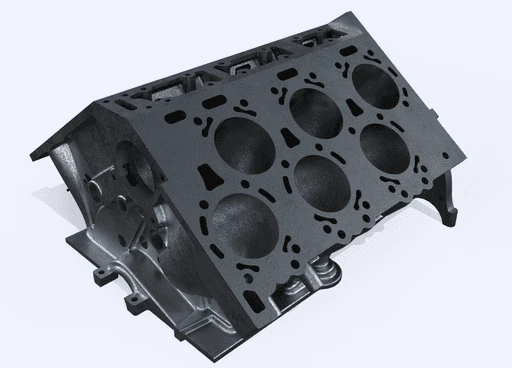

Move fast without guessing
Seed-stage velocity matters. Machine-level consequence still requires limits, fallback, rollback, and named owners.
DecisionWhat may act now?
4MP is building the intelligence layer that turns manufacturing intent, imperfect physical reality, and metrology evidence into corrective action a machine has earned permission to take.
Select any step to inspect that exact point. When a scenario stops early, later steps explain what evidence or human decision is missing.
Only a proven correction is retained, with the machine, tool, material, operation, and environment where it is valid.

What 4MP is building
Turn measurement into action—and keep machines cutting.
4MP publicly describes a utilization problem rooted in setup, measurement, and manual fixes. The opportunity is a new control layer that can interpret intent, understand real machine behavior, correct within evidence-backed limits, and improve the next operation.
Four decisions the founding AI leader must make explicit
The actual work is not simply to build models. It is to build the technical and organizational system that decides what a machine may understand, change, prove, and remember.
Seed-stage velocity matters. Machine-level consequence still requires limits, fallback, rollback, and named owners.
AI, physics, geometry, metrology, rules, and software need explicit responsibilities and handoffs.
A machine-specific correction becomes reusable only when its evidence, scope, and expiry remain attached.
The VP must recruit and architect while staying credible in code, data, tests, failure analysis, and operating detail.
How I would structure the work
4MP needs more than an algorithm. It needs an intelligence system that proposes, an evidence system that qualifies, and an organization that can keep both honest as the product scales.
Translate intent and physical state into a cause hypothesis and a correction proposal.
Prove that the proposed action is safe, useful, repeatable, and appropriately scoped.
Install technical ownership, hiring, review cadence, and release discipline around correction classes.
Verified transferability
Russell's strongest record is where machines, software, telemetry, quality, customers, engineering, and operating teams must agree on what happened and what to do next.
Director of Operations
AI-first operating transformation in a robotics and machine-vision environment with approximately 1,000 fielded robots.
Founder / AI and Automation Advisor
AI-readiness frameworks, structured context, retrieval, agents, human review, evaluation, governance, and decision records.
Director of Operations and Engineering Management
Led engineering, manufacturing, quality, customer delivery, and complex technical programs in advanced electronics.
Chief Pilot, Autonomous Systems and Aerial Data Operations
100% safety record and no FAA incidents; TensorFlow-based aerial inventory and computer-vision concepts.
Operations Management / Site Leader
Launch, throughput, escalation, labor planning, and standard work supporting approximately five million second-day orders annually.
Bachelor of Science
Academic grounding in materials science, physical chemistry, and biology-related studies.
First 120 days
Four calibrated passes move from a shared correction contract to bounded release, reusable evidence, and a focused founding AI organization.
Agree on one correction class, its state model, data sources, frames, success criteria, and named decision owners.
Reconstruct state, rank causes, propose bounded action, and compare recommendations with expert decisions.
Test tool, fixture, material, environment, program style, missing data, and known failure conditions.
Turn the proof into data contracts, simulation interfaces, team ownership, hiring priorities, and a correction-class roadmap.
Application dossier
Each artifact advances a different part of the case; none repeats the site or adds a second layer of unnecessary buttons.
Verified evidence mapped to physical AI, manufacturing, autonomous systems, operating mechanisms, and founding leadership.
Open résumé →02 / APPLICATIONA direct case for connecting intent, machine reality, evidence, and responsible corrective authority.
Open letter →03 / INTERVIEWThe company problem, correction architecture, evidence map, first proof, and executive questions.
Open brief →